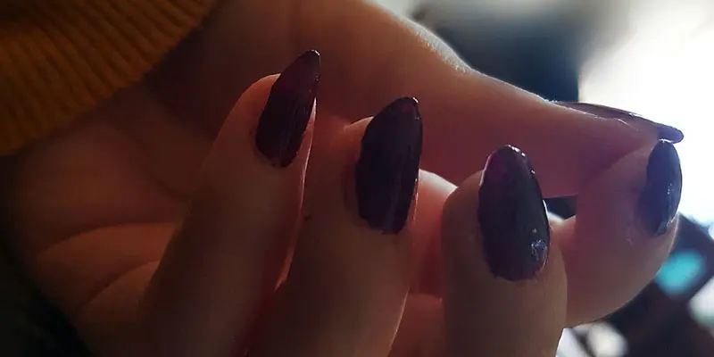
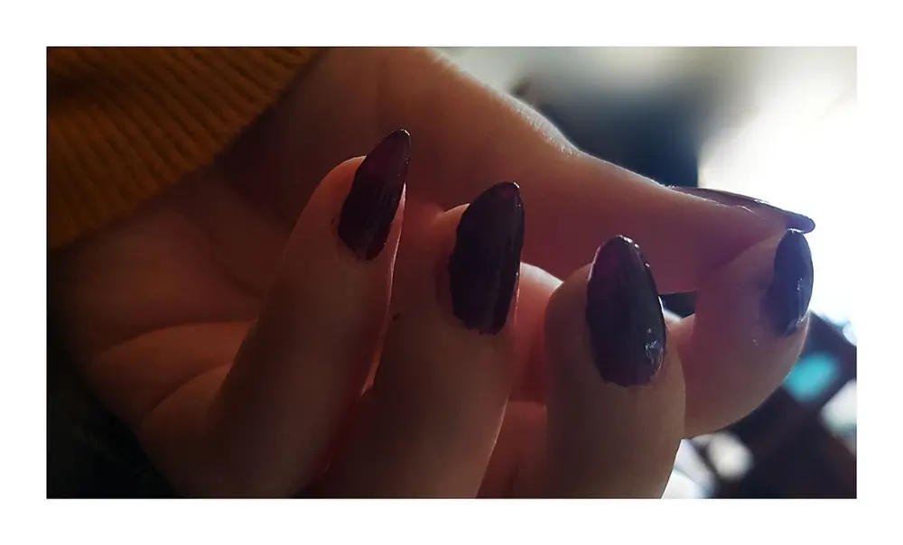
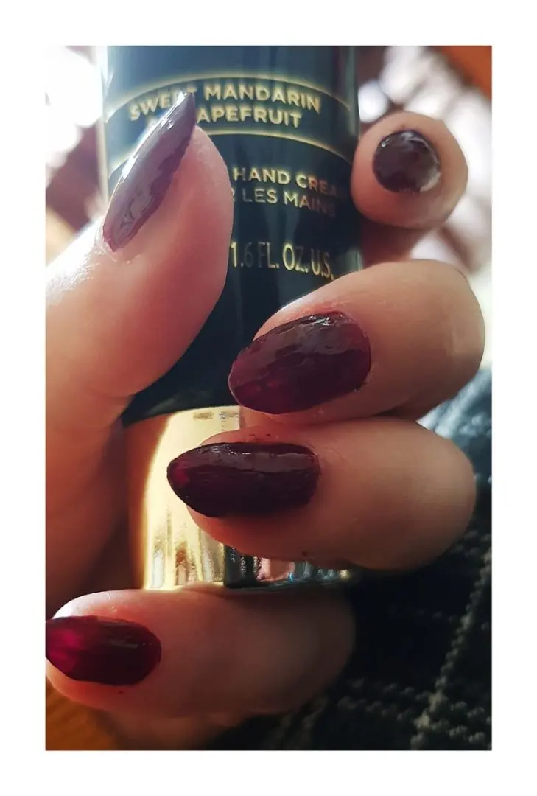

Ritorno alla forma MOUNTAIN PEAK con le unghia

Approfittando che avevo le unghia davvero devastate, mi sono dedicata alla manicure.
In questo momento di crisi per il corona-virus, io mi sono messa in una sorta di quarantena forzata. Ho paura di infettarmi. Sarò ignorante, sarò esagerata, ma avendo problemi respiratori, ho preferito un po' di riposo piuttosto che vivere di ansia tutte le volte che esco.Ovvio, se devo uscire per forza mi armo di pazienza e via.
Ma poiché non ho esigenza di uscire, resto in casa.
E restando in casa devo però trovare modi per impiegare il tempo.
E quale modo migliore per prendersi cura di se stessi?
Voi sapete che ormai ogni tanto mi fisso con colori alle unghia. Oggi infatti, non vi farò vedere tanto il colore quanto la forma.
Già una volta ho cambiato forma dal mio solito quadrato a questa forma un po' più ovale, precisamente chiamata MOUNTAIN PEAK.
L'ho spiegato per bene in questo articolo QUI.
Due giorni fa, dunque mi sono di nuovo armata di fresa e lima e mi sono messa all'opera.
Ho iniziato a limare pesantemente con la fresa di qua e di là.

In realtà non mi stavano nemmeno piacendo come stavano venendo, convinta che stessi sbagliando tutto, ho incominciato a provare a sistemare il tutto con la lima manuale.

E così, dopo il lavoro grosso della lima elettrica, ho dato il colpo finale con la manuale.Il risultato sicuramente se le faccio vedere ad un onicotecnica, non sarà perfetto.
Ma mettete che non ho mai fatto un corso, è tutto da autodidatta e passione di una vita et voilà..Il colore usato è un mix tra un prugna e un rossastro scuro.
Non c'è il numero sulla bottiglina, ma il più simile che posso consigliarvi è quello che ho usato l'altra volta, quello di KIKO n• 243.
Purtroppo non sono riuscita a fare foto più chiare. Perdonate la mia inadeguatezza in questo post XD